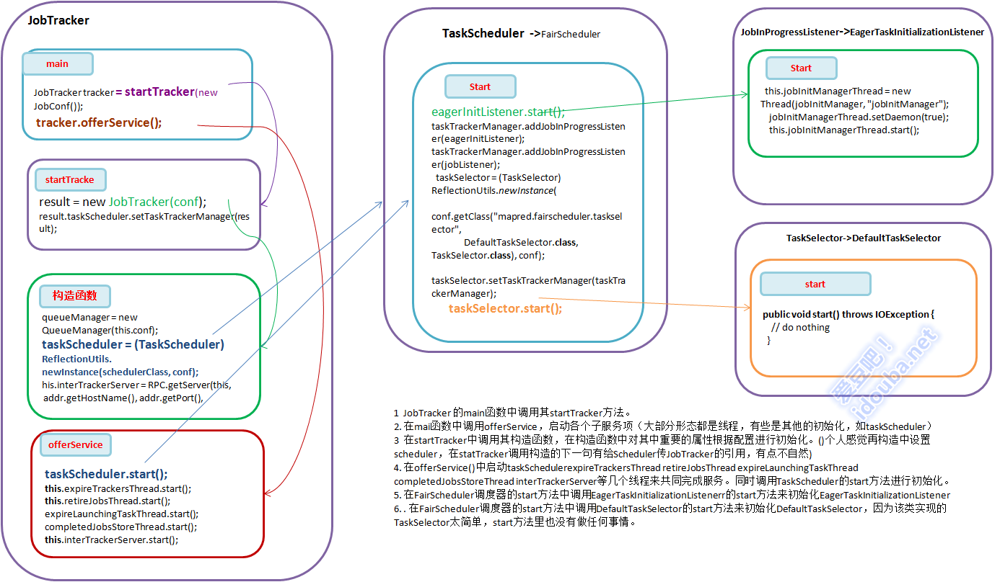

【hadoop代码笔记hadoop作业提交之JobTracker等相关功能模块初始化
一、概要描述
本文重点描述在JobTracker一端接收作业、调度作业等几个模块的初始化工作。想过模块的介绍会在其他文章中比较详细的描述。受理作业提交在下一篇文章中会进行描述。
为了表达的尽可能清晰一点只是摘录出影响逻辑流转的主要代码。重点强调直接的协作调用，每个内部完成的逻辑（一直可以更细的说明、有些细节可能自己也理解并不深刻:-(）在后续会描述。
主要包括JobTracker、TaskScheduler（此处以FairScheduler为例）、JobInProgressListener（以用的较多的EagerTaskInitializationListener为例）、TaskSelector(以最简单的DefaultTaskSelector为例)等。
二、 流程描述
- JobTracker 的main函数中调用其startTracker方法。
- 在mai函数中调用offerService，启动各个子服务项（大部分形态都是线程，有些是其他的初始化，如taskScheduler）
- 在startTracker中调用其构造函数，在构造函数中对其中重要的属性根据配置进行初始化。()个人感觉再构造中设置scheduler，在statTracker调用构造的下一句有给Scheduler传JobTracker的引用，有点不自然)
- 在offerService()中启动taskSchedulerexpireTrackersThread retireJobsThread expireLaunchingTaskThread completedJobsStoreThread interTrackerServer等几个线程来共同完成服务。同时调用TaskScheduler的start方法进行初始化。
- 在FairScheduler调度器的start方法中调用EagerTaskInitializationListenerr的start方法来初始化EagerTaskInitializationListener
- 在FairScheduler调度器的start方法中调用DefaultTaskSelector的start方法来初始化DefaultTaskSelector，因为该类实现的TaskSelector太简单，start方法里也没有做任何事情。

JobTracker等相关功能模块初始化
三、 代码详述
1. JobTracker 的入口main函数。主要是实例化一个JobTracker类，然后调用offerService方法做事情。
在Jobtracker的main函数中去掉记日志和异常捕获外关键代码就一下两行。
JobTracker tracker = startTracker(new JobConf());
tracker.offerService();
2. JobTracker 的startTracker方法。 调用JobTracker的构造函数，完成初始化工作。
JobTracker result = null;
while (true) {
try {
result = new JobTracker(conf);
result.taskScheduler.setTaskTrackerManager(result);
Thread.sleep(1000);
}
JobEndNotifier.startNotifier();
return result;
3. JobTracker的构造方法JobTracker(JobConf conf)。是一个有两三屏的长的方法。值得关注下，当然jobtracker服务运维的有些部分会适当忽略，着重看处理作业的部分。(其实这样的说法也 不太对，Jobtracker的主要甚至是唯一的作用就是处理提交的job)
主要的工作有：
1)创建一个初始化一个队列管理器，一个HadoopMapReduce作业可以配置一个或者多个Queue，依赖于其使用的作业调度器Scheduler 2)根据配置创建一个调度器 3)创建一个RPC Server,其中handlerCount是RPC server服务端处理请求的Handler线程的数量，默认是10。详细机制参照RPC机制描述。 4)创建一个创建一个HttpServer，用于JobTracker的信息发布。 5)创建一个RecoveryManager，用于JobTracker重启时候恢复 6)创建一个CompletedJobStatusStore，用户持久化作业状态。
//初始化一个队列管理器，一个HadoopMapReduce作业可以配置一个或者多个Queue，依赖于其使用的作业调度器Scheduler
queueManager = new QueueManager(this.conf);
// 根据 conf的配置创建一个调度器
Class< extends TaskScheduler> schedulerClass = conf.getClass("mapred.jobtracker.taskScheduler",JobQueueTaskScheduler.class, TaskScheduler.class);
taskScheduler = (TaskScheduler) ReflectionUtils.newInstance(schedulerClass, conf);
//创建一个RPC Server，作用见上节详细描述
InetSocketAddress addr = getAddress(conf);
this.localMachine = addr.getHostName();
this.port = addr.getPort();
int handlerCount = conf.getInt("mapred.job.tracker.handler.count", 10);
//其中handlerCount是RPC server服务端处理请求的Handler线程的数量，默认是10
this.interTrackerServer = RPC.getServer(this, addr.getHostName(), addr.getPort(), handlerCount, false, conf);
//创建一个HttpServer
infoServer = new HttpServer("job", infoBindAddress, tmpInfoPort, tmpInfoPort == 0, conf);
infoServer.addServlet("reducegraph", "/taskgraph", TaskGraphServlet.class);
infoServer.start();
//用于重启时候恢复
recoveryManager = new RecoveryManager();
//初始化 the job status store，用户持久化作业状态
completedJobStatusStore = new CompletedJobStatusStore(conf,fs);
4. Jobtracker的offerService方法。把她相关的子服务（大部分是线程）启动，其他的相关的初始化。 1）启动任务调度器。 2）在每次启动时候，恢复需要恢复的作业 3）启动expireTrackersThread，其实是启动ExpireTrackers类型的一个线程。 this.expireTrackersThread = new Thread(this.expireTrackers, expireTrackers”); 4）启动retireJobsThread ，其实是启动RetireJobs类型的一个线程.删除完成的过期job 5）启动expireLaunchingTaskThread，查分配的task未返回报告的使之为过期。 6）启动CompletedJobStatusStore，负责job信息的持久化或者读出。 7）启动RPC 服务，接收客户端端的RPC请求
//启动任务调度器。
taskScheduler.start();
//恢复需要恢复的作业,不深入进行看了。
recoveryManager.recover();
//启动expireTrackersThread，其实是启动ExpireTrackers类型的一个线程。this.expireTrackersThread = new Thread(this.expireTrackers, expireTrackers");
this.expireTrackersThread.start();
//启动retireJobsThread ，其实是启动RetireJobs类型的一个线程.删除完成的过期job
this.retireJobsThread = new Thread(this.retireJobs, "retireJobs");
this.retireJobsThread.start();
//检查分配的task未返回报告的使之为过期。
expireLaunchingTaskThread.start();
//启动CompletedJobStatusStore，负责job信息的持久化或者读出。
completedJobsStoreThread.start();
//启动RPC 服务，接收客户端端的RPC请求
this.interTrackerServer.start();
5. TaskScheduler（FairScheduler）的Start方法。Scheduler相关的初始化。
1)调用用EagerTaskInitializationListener的Start方法，启动一个守护线程来初始化其jobInitQueue中的Job（JobInprogress） 2)向taskTrackerManager（其实就是JobTracker）注册JobInProgressListener，响应Job相关的动作，如典型的jobAdded方法。eagerInitListener响 应JobAdded方法，是把加入的job放到自己的管理的队列中，启动线程去初始化；jobListener是该类的内部类，其jobAdded方法是 构造job的调度信息JobInfo，并把每个job和对应的调度信息加入到实例变量Map<JobInProgress, JobInfo> infos中，供调度时使用。 3)初始化PoolManager 4)根据配置，初始化一个 LoadManager，在scheduler中决定某个tasktracker是否可以得到一个新的Task，不同的LoadManager有不同的算 法。一般默认的是CapBasedLoadManager，根据每个Node的最大可接受数量平均分配。 5)构造一个TaskSelector 6) 一个线程调用FairScheduler的update方法来以一定间隔来更新作业权重、运行待运行的task数等状态信息以便FairScheduler调度用。 7) 注册到infoserver中，可以通过web查看其信息。
// 1)调用用EagerTaskInitializationListener的Start方法，启动一个守护线程来初始化其jobInitQueue中的Job（JobInprogress）
Configuration conf = getConf();
this.eagerInitListener = new EagerTaskInitializationListener(conf);
eagerInitListener.start();
// 2)向taskTrackerManager（其实就是JobTracker）注册JobInProgressListener，响应Job相关的动作，如典型的jobAdded方法。eagerInitListener响应JobAdded方法，是把加入的job放到自己的管理的队列中，启动线程去初始化；jobListener是该类的内部类，其jobAdded方法是构造job的调度信息JobInfo，并把每个job和对应的调度信息加入到实例变量Map<JobInProgress,
// JobInfo> infos中，供调度时使用。
taskTrackerManager.addJobInProgressListener(eagerInitListener);
taskTrackerManager.addJobInProgressListener(jobListener);
// 3)初始化PoolManager
poolMgr = new PoolManager(conf);
// 4)根据配置，初始化一个LoadManager，在scheduler中决定某个tasktracker是否可以得到一个新的Task，不同的LoadManager有不同的算法。一般默认的是CapBasedLoadManager，根据每个Node的最大可接受数量平均分配。
loadMgr = (LoadManager) ReflectionUtils.newInstance(conf.getClass(
"mapred.fairscheduler.loadmanager", CapBasedLoadManager.class,
LoadManager.class), conf);
loadMgr.setTaskTrackerManager(taskTrackerManager);
loadMgr.start();
// 5)构造一个TaskSelector
taskSelector = (TaskSelector) ReflectionUtils.newInstance(conf
.getClass("mapred.fairscheduler.taskselector",
DefaultTaskSelector.class, TaskSelector.class), conf);
taskSelector.setTaskTrackerManager(taskTrackerManager);
taskSelector.start();
Class<> weightAdjClass = conf.getClass(
"mapred.fairscheduler.weightadjuster", null);
if (weightAdjClass != null) {
weightAdjuster = (WeightAdjuster) ReflectionUtils.newInstance(
weightAdjClass, conf);
}
assignMultiple = conf.getBoolean("mapred.fairscheduler.assignmultiple",
false);
sizeBasedWeight = conf.getBoolean(
"mapred.fairscheduler.sizebasedweight", false);
initialized = true;
running = true;
lastUpdateTime = clock.getTime();
// 6) 一个线程调用FairScheduler的update方法来以一定间隔来更新作业权重、运行待运行的task数等状态信息以便FairScheduler调度用。
if (runBackgroundUpdates)
new UpdateThread().start();
// 7) 注册到infoserver中，可以通过web查看其信息。
if (taskTrackerManager instanceof JobTracker) {
JobTracker jobTracker = (JobTracker) taskTrackerManager;
HttpServer infoServer = jobTracker.infoServer;
infoServer.setAttribute("scheduler", this);
infoServer.addServlet("scheduler", "/scheduler",
FairSchedulerServlet.class);
}
6. JobInProgressListener(EagerTaskInitializationListener)的start方法。初始化一个线程，检查器jobqueue上的job进行初始化。
this.jobInitManagerThread = new Thread(jobInitManager, "jobInitManager");
jobInitManagerThread.setDaemon(true);
this.jobInitManagerThread.start();
7. TaskSelector(DefaultTaskSelector)的start方法。在父类TaskSelector和子类DefaultTaskSelector都没有做任何事情，因为DefaultTaskSelector的实现的主要业务方法只是简单封装，在该类中没有保存任何状态的信息，也不用其他子服务之类的来完成，因此没有初始化内容。但是其他方式的TaskSelector可能会有，因此父类中定义了个start方法。
public void start() throws IOException {
// do nothing
}
完。